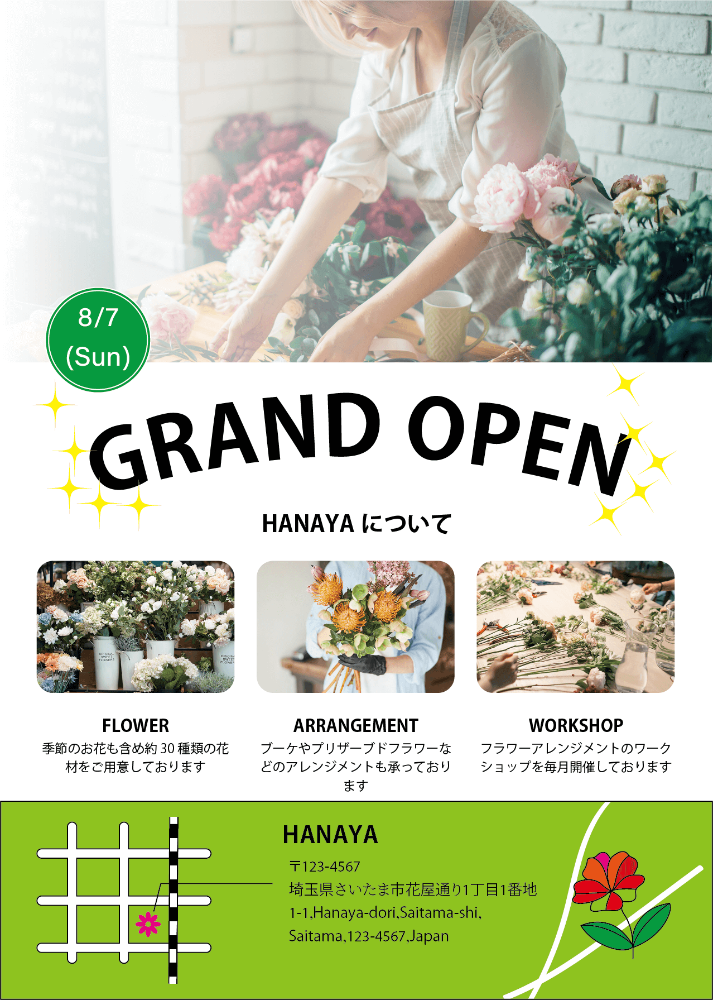
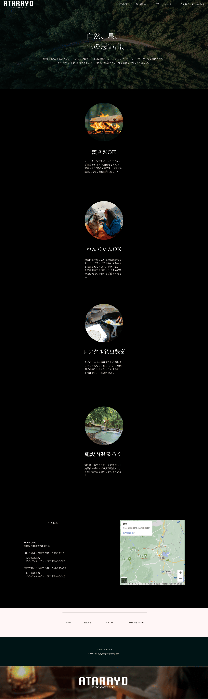

WORKS
logo
Flyer／Banner
-

学校課題illustrator
制作背景
チラシ全体の可読性を向上させるため、画像の透明度を調整しました。これにより、花の柔らかく温かみのある印象を与え、文字が埋もれることなく視線を自然に誘導するデザインに仕上げています。
ターゲット
・日常的に花を楽しみたい人
・記念日やギフトに花を贈りたい人サイズ
1278*1791
Design comp
こちらではXDまたはFigmaで制作したサイトをご紹介します。
ATARAYO


学校課題
Figma
授業内で制作したPC版キャンプサイトの本格的なデザインカンプです。
以下実務を想定した場合の制作フローを掲載しています。
制作フロー
- １．企画 - コンセプトの決定、必要な機能の洗い出し、サイトマップ作成（作業期間目安：3日）
- ２．設計 - UXとUIを考慮したワイヤーフレームのラフスケッチ作成（作業期間目安：5日）
- ３．準備 - デザインの方向性を決定し、使用する画像やテキストなどの素材を収集（作業期間目安：5日）
- ４．制作 - デザインツールを用いたデザインカンプを作成し、ユーザーの導線を検証（作業期間目安：7日）
- ５．完成 - コーディング、テスト、公開、運用を必要に応じて実施（作業期間目安：7〜10日）